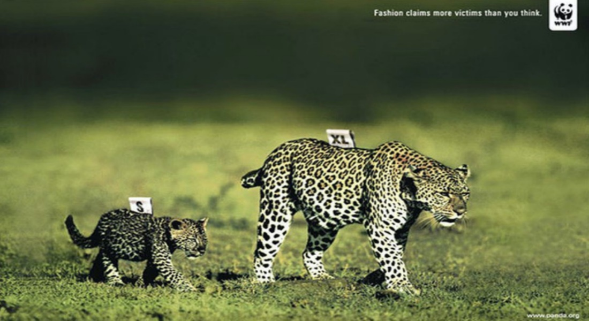
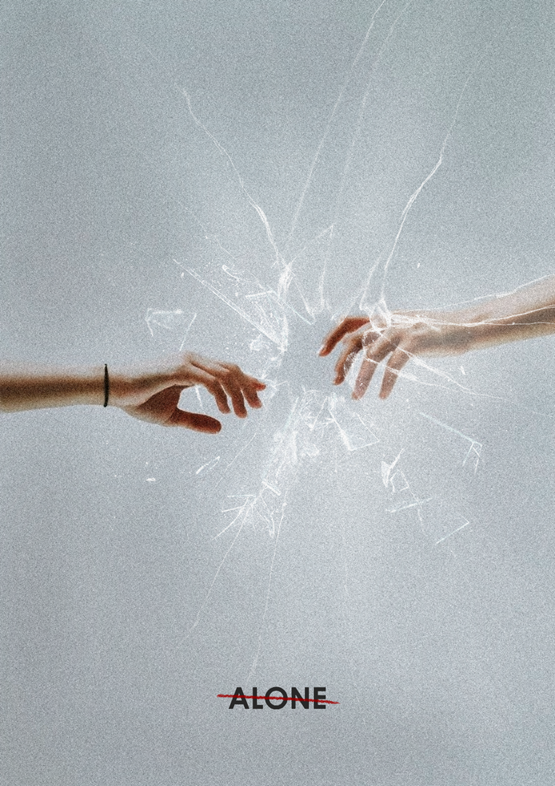

|
Проти куріння, алкоголю, наркотиків Слоган: «Не будь небезпечним
для себе та інших»
|
- Має підкреслювати небезпеку та фокусувати увагу
- Приглушений сірий або темно-сірий фон
-
Можливий яскравий акцентний колір (червоний, помаранчевий та
його відтінки), який повідомляє про небезпеку
|
|
Захист навколишнього середовища. Слоган «Захистіть моря і океани
- захистіть нашу планету!"
|
-
Застосування двох основних кольорів та їх відтінків.
Противага приглушеного кольору морської води, холодні
відтінки сіро-синього для фону
-
Приглушені кольори червоного або коричневого та світлі
відтінки холодних кольорів дають змогу отримати потрібне
співвідношення контрасту та посилення емоційного впливу
- Можна з синім поєднати відтінки жовтого або зеленого
|
| Захист тварин Слоган: «Захистіть їх право на життя!» |
-
Теплі кольори – коричневі, жовті, рожеві для підкреслення
позитивних емоцій, дружби з тваринами
-
Можливий приглушений акцентний колір – чорний, або бордовий
як кров

|
| Проти самотності. Слоган: «Важливо бути разом!» |
-
Відтінки світло-бежевого для фону та коричневого чи
темно-сірого для персонажу
-
Світлий простір у навколого центрального образу, що має
приглушені темні відтінки, або навпаки контраст світлого
об’єкту з темним фоном

|
| Проти війни. Слоган: «Ніколи знову!» |
-
Застосування двох основних кольорів та їх відтінків.
Противага червоно-бордового кольору, кольору крові та
чорного або темно-сірого.
-
Контраст бездушного чорного і тривожного червоного посилюють
емоційне враження
|